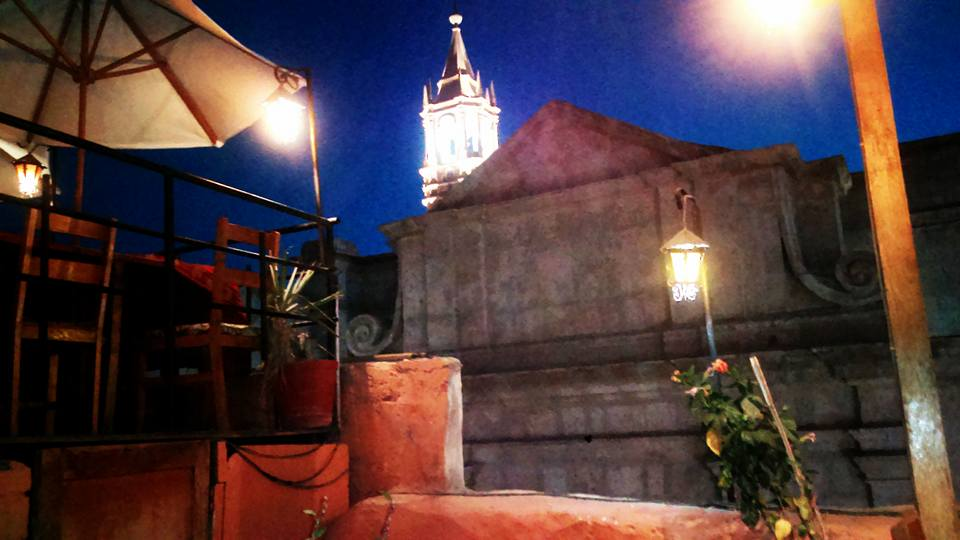

Claudia Loayza Medina nació en Arequipa el 31 de Julio de 1991 en el seno de una hermosa familia de 5 integrantes: tres hijas, siendo la segunda.
Estudio Marketing en la Universidad Nacional de San Agustin.
A la edad de 10 años realizo varias actividades en la que su padre, Ventura Loayza, la inscribio. Siendo unas de ellas:
Claudia no es Photografa profesional pero le gusta tomar fotos cuando observa paisajes, objetos, proyecciones agradables.
Claudia Loayza Medina adora y se encuentra maravillada por la hermosura de Arequipa
